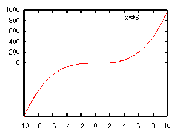
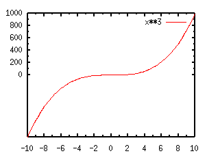
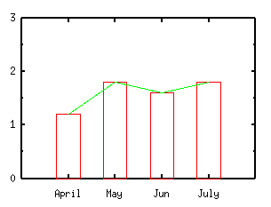
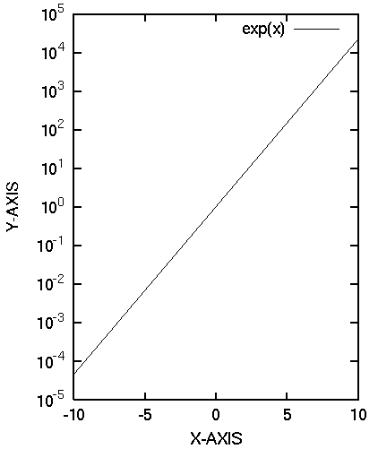
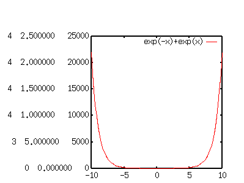
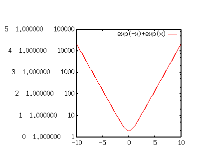
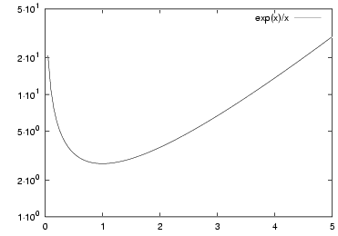

- not so Frequently Asked Questions -
update 2004/9/5
|
|
- not so Frequently Asked Questions - update 2004/9/5
|
|
not so FAQ |
About TicsHow do I change an appearance of tics on each axis ?There are two kinds of tics --- the major tics and the minor tics. Numbers (figures) on axes are drawn at the major tics only. At the default the minor tics are not shown except for a logarithmic scale. set {x|y}tics command changes the major tics. gnuplot> set xtics 2 gnuplot> set ytics 0,200 gnuplot> plot x**3 Only an increment is defined for the X-axis, so that the positions of tics become -10, -8, ... +10. For the Y-axis, the starting value and the increment are both given. Gnuplot makes tics at 0, 200, 400... In this case there is no tic mark where Y is negative. You can also give the last value like, set ytics 0,200,600. The minor tics can be controlled by set m{x|y}tics . Intervals between each major tic are divided by this value. The following example is to draw a mid-point between each major tics in the above figure. gnuplot> set mxtics 2 gnuplot> set mytics 2 It is possible to place an arbitrary text at the tics position instead of the numbers. you can write "April", "May", "June", and "July" at the positions X=1,2,3, and 4, by the following way.
gnuplot> set xtics ("April" 1, "May" 2, "June" 3, "July" 4)
gnuplot> plot "test.dat" using 1:2:3 notitle with boxes,\
"test.dat" using 1:2 notitle with lines

As can be seen, the minor tics are ignored when the major tics are defined in this syntax. Command set ticscale n m changes the length (size) of tics. The major tics are multiplied by the provided value n, while the minor tics are multiplied by m. If m is omitted, the minor tics are half length of the major tics. set ticscale 1 1 makes the same length of the major and minor tics. The tics are drawn inwards. To make it outwards, set tics out .  I want to use an exponent instead of a decimal like 0.001 in a log-scale plot.The default format of the tic-mark labels is "%g". In the log scaling, the labels are written by the "F" format like 0.01, 1000, etc. if the range is more than 0.0001 and less than 100000. If the numbers are outside this range, the format is changed into "E" which gives the numbers such as 1e-05, 1e+06, etc. To express numbers by power to base 10, change the label format into "10^{%L}" by the command set format. "%L" gives the value of power to base 10. The X window terminal cannot show super-scripts, so use the postscript terminal.
gnuplot> set format y "10^{%L}"
gnuplot> set terminal postscript eps enhanced
gnuplot> set ylabel "Y-AXIS" 2,0

When the format is defined like this, the distance between
the Y-axis and its label becomes wider. This can be adjusted by
the offset option of the set ylabel command. In this
case the Y-axis label was moved to right by 2 character-widths.
How do I change the format of the numbers ?The format of the tic-labels can be changed by set format command. The syntax is set format + axis name (X, Y, Z, XY, X2, Y2) + format string. This string is similar to the format string in C-language. The next example tells gnuplot to show the tic-labels by ten letters with three digits following the decimal point. gnuplot> set format x "%10.3f" The syntax for the digit is "%" + (total length).(precision). The floating number 6.2 represents that the total length is six and there are two digits following the decimal point, so that tic-labels are shown as "5.00". It is possible to omit the length or precision, like 6 or .2. The default values are used for the omitted number. The display format is expressed by one letter -- 'f', 'e', 'E', 'g', 'x', 'X', 'o', 't', 'l', 's', 'T', 'L', 'S', 'c', and 'P'. The default is "%g". When the tics-labels can be expressed by appropriate length and precision, those are written by "%.0f" format, otherwise "%e" format is used. The next table shows the difference among the format 'f', 'e', 'x', and 'o'. The formats 'e' and 'E' are the same except that the written text is 'e' or 'E'. The format "%O" exists in the gnuplot manual, but it does not work (bug ?)
The formats, 't', 'l', 'T', and 'L' are related to log-scale plot. Let's draw a function y=exp(-x)+exp(x) in the X range of [-10:10]. Firstly this function is shown in a non-log scale. In order to compare those formats, the tics are shown in three formats at the same time. gnuplot> set format y "%T %t %g" gnuplot> plot exp(-x)+exp(x) You can specify the different kinds of format simultaneously just like this case --- three numbers are written on the Y-axis. The first one is for "%T", the next is "%t", and the third is "%g", respectively. As you can see, "%t" represents the mantissa to base 10, and "%T" represents the power to base 10. Therefore the number expressed by the "%g" format is A x 10^B, where A is given by "%t" and B is "%T". Now, the figure in log-scale becomes: gnuplot> set logscale y gnuplot> replot The numbers expressed by the format "%t" become unity, and "%T" gives log of the Y-axis. So set format "%T" displays power to base 10 along the Y-axis. If the terminal can display a super-script - like Postscript terminal, the format "10^{%T}" gives an exponential expression. Usually 't' and 'l', 'T' and 'L' give the same results in a usual log-scaling. If one uses the different base for log-scaling, those give different results. The format 't' and 'T' give mantissa and power to base 10, while 'l' and 'L' give those to an arbitrary base which is defined by set logscale axis base command. But base 10 is commonly used for log-scaling, so you can regard those the same. You can include various letters and texts as well as the numbers in format. For example, set format x "%g km" displays values in 'g' format and unit "km". How do I erase numbers ?This is an application of the above item. gnuplot> set format x "" I want to make intermediate values in the logarithmic tics. from Chriss in Univ. Tuebingen. Thanks !
Generally log-tics appear at the power of 10, (1,10,100...). Sometimes it is helpful to understand graphs if you make tics between them, especially in case the range of axis is not so large (for example, ratio of the max to min is 10 or 100). Gnuplot writes values at the major tics specified by set {x|y}tic only, so you need to define the positions where you want to write values.
gnuplot> set logscale y
gnuplot> set yrange [1:50]
gnuplot> set ytics (1,2,5,10,20,50)
gnuplot> set format y "%2.0t{/Symbol \327}10^{%L}"
gnuplot> set lmargin 8
gnuplot> set terminal postscript eps enhanced
gnuplot> plot exp(x)/x

The Postscript symbol in the set format line becomes "center dot". To change it into "cross", use {/Symbol \264}. The method explained here does not work on some systems. For example, when the number 50.0 is formatted with "%t" and "%L", some system gives the values 5.0 and 1 (namely 50.0 = 5.0E+01), so it works fine. But other systems give the value of 0.5 and 2 (50.0 = 0.5E+02). In this case the value on the graph axis becomes 0x10^2. (zero in log-graph ????) | ||||||||||||||||||||